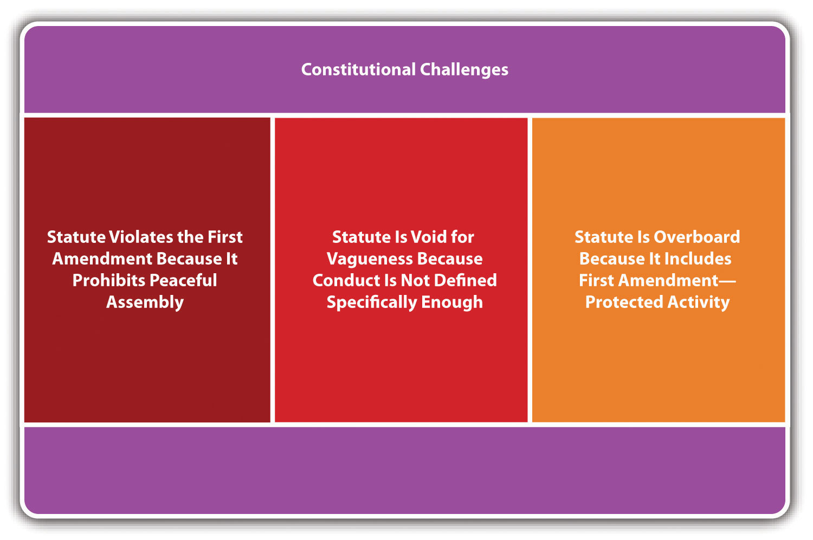
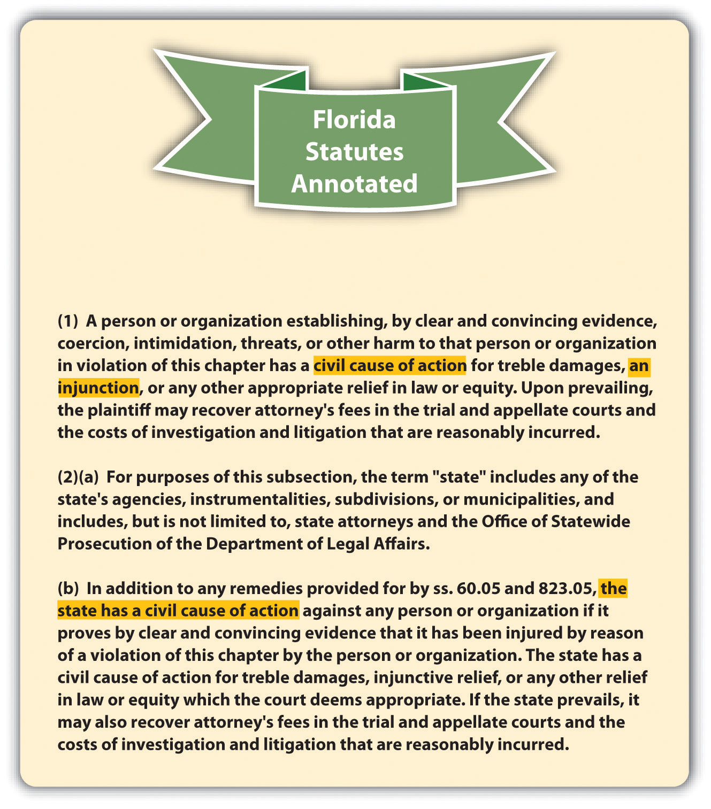

Group conduct, if criminal, can enhance the potential for violence and injury and is punishable as the crimes of unlawful assembly, riot, or criminal gangs. However, the right to peacefully assemble is guaranteed in the First Amendment, so statutes codifying these offenses can be subject to constitutional attack similar to disorderly conduct, vagrancy, and loitering statutes. In addition, the problem of criminal gangs has proven to be so stubborn that it has produced some novel criminal and civil responses. The following sections discuss group activity offenses as well as their potential constitutional defenses.
Unlawful assemblyGroup assembly with the intent to commit breach of the peace, an unlawful act, or riot. can be the predicate offense to riot, which is discussed shortly. The elements required for unlawful assembly are the assemblingAla. Code § 13A-11-5, accessed April 9, 2011, http://law.onecle.com/alabama/criminal-code/13A-11-5.html. or meetingFla. Stat. Ann. § 870.02, accessed April 9, 2011, http://law.onecle.com/florida/crimes/870.02.html. (criminal act) of a group, with the specific intent or purposely to commit a breach of the peace, some other unlawful act,Fla. Stat. Ann. § 870.02, accessed April 9, 2011, http://law.onecle.com/florida/crimes/870.02.html. or riot.Ala. Code § 13A-11-5, accessed April 9, 2011, http://law.onecle.com/alabama/criminal-code/13A-11-5.html. Some jurisdictions and the Model Penal Code punish the failure to disperseA group’s failure to leave when a peace officer or public official orders it. (criminal act) when a peace officer or public servant orders a group participating in disorderly conduct likely to cause substantial harm, serious annoyance, or alarm to do soMass. Gen. Laws ch. 269 § 1, accessed April 9, 2011, http://law.onecle.com/massachusetts/269/1.html. (Model Penal Code § 250.1(2)). The criminal intent element for failure to disperse is general intent or knowinglyN.J. Stat. § 2C:33-1, accessed April 9, 2011, http://law.onecle.com/new-jersey/2c-the-new-jersey-code-of-criminal-justice/33-1.html. (Model Penal Code § 250.1(2)).
Jurisdictions vary as to the attendant circumstance for unlawful assembly and failure to disperse, which is the size of the group. Some common group minimums are two,Cal. Penal Code § 407, accessed April 9, 2011, http://law.onecle.com/california/penal/407.html. three,Fla. Stat. Ann. § 870.02, accessed April 9, 2011, http://law.onecle.com/florida/crimes/870.02.html. or five.N.J. Stat. § 2C:33-1, accessed April 9, 2011, http://law.onecle.com/new-jersey/2c-the-new-jersey-code-of-criminal-justice/33-1.html. The Model Penal Code requires three or more persons (Model Penal Code § 250.1(2)).
Six neighbors are sitting on their porches, peacefully chatting. One of the neighbors, Buck, notices a pro-choice group with signs in the park across the street. Annoyed, Buck tells the group, “Let’s go show those losers what it’s like to fear for your life!” He marches angrily over to the park, and the other neighbors follow. Buck begins chanting, “How would you like to be aborted?” and the other neighbors join in. The individuals in the pro-choice group stand their ground, and the decibel of the chanting increases. Buck and his neighbors form a ring around the group and move in closer, almost touching the individuals and their signs. A park ranger hears the noise, walks over to Buck and his neighbors, and tells them to “move along.” Buck spits at the ranger’s feet and starts up the chant again. The other neighbors laugh and join him.
In this scenario, Buck and his neighbors have most likely committed unlawful assembly and failure to disperse in many jurisdictions. Buck and his neighbors number six, which generally meets the minimum unlawful assembly and failure to disperse attendant circumstance requirement. When Buck and his neighbors go to the park in a group, they are assembling. Their chant, “How would you like to be aborted?” is directed at a pro-choice group, so it is evident that Buck and his neighbors have the specific intent or purposely to cause a breach of the peace. In addition, the increasing decibel of the chanting and the neighbors’ close proximity to the pro-choice group indicates an intent to intimidate, threaten, and possibly commit an unlawful act such as false imprisonment, assault, battery, or riot. When the park ranger, who is most likely a peace officer, tells Buck and his neighbors to “move along,” he is ordering them to disperse. Buck’s response in spitting at the ranger’s feet and starting up the chant again is probably a failure to disperse committed with general intent or knowingly. Thus Buck and his neighbors may be subject to prosecution for and conviction of both of these offenses in many jurisdictions.
The offenses of unlawful assembly and failure to disperse target conduct that, if peaceful, is protected by the First Amendment. Therefore, similar to disorderly conduct offenses, statutes proscribing this type of conduct are subject to strict scrutiny, must be narrowly tailored, and must be supported by a compelling government interest, or they are vulnerable to attack under the First AmendmentPeople v. Sanchez, 888 N.Y.S. 2d 352 (2009), accessed April 9, 2011, http://scholar.google.com/scholar_case?case=15178974598569042123&q= unconstitutional+%22unlawful+assembly+statute%22&hl=en&as_sdt=2,5&as_ylo=1992. or as void for vagueness and overbroad.
Figure 12.4 Potential Constitutional Challenges to Unlawful Assembly and Failure to Disperse Statutes
Unlawful assembly and failure to disperse are generally graded as misdemeanors.Ala. Code § 13A-11-5, accessed April 9, 2011, http://law.onecle.com/alabama/criminal-code/13A-11-5.html. The Model Penal Code grades failure to disperse as a misdemeanor (Model Penal Code § 250.1(2)).
RiotGroup commission of an unlawful violent act or a lawful act in a violent manner. can be the result of an unlawful assembly that escalates, an incitement to riot (discussed in Chapter 3 "Constitutional Protections"), or can occur spontaneously without any planning or predicate activity. The criminal act element required for riot in many jurisdictions is group commission of an unlawful act of violence or a lawful act in a violent and tumultuous manner.Ga. Code tit. 16 § 16-11-30, accessed April 9, 2011, http://law.onecle.com/georgia/16/16-11-30.html. The Model Penal Code criminalizes riot when a group participates in a course of disorderly conduct (Model Penal Code § 250.1). The criminal intent element for riot varies, depending on the jurisdiction. Some jurisdictions and the Model Penal Code require specific intent or purposely to commit or facilitate a felony or misdemeanor, or to prevent or coerce official action, or general intent or knowledge that anyone plans to use a firearm or deadly weaponN.J. Stat. § 2C:33-1, accessed April 9, 2011, http://law.onecle.com/new-jersey/2c-the-new-jersey-code-of-criminal-justice/33-1.html. (Model Penal Code § 250.1). Others make riot a strict liability offense.Cal. Penal Code § 404, accessed April 9, 2011, http://law.onecle.com/california/penal/404.html; Ga. Code tit. 16 § 16-11-30, http://law.onecle.com/georgia/16/16-11-30.html. In many jurisdictions, riot also has the requirement that the defendant(s) be the factual and legal cause of harm, which is public terror and alarm or a risk thereof.Ala. Code § 13A-11-3, accessed April 9, 2011, http://law.onecle.com/alabama/criminal-code/13A-11-3.html.
Jurisdictions vary as to the attendant circumstance for riot, which is the size of the group. Some common group minimums are two,Ga. Code tit. 16 § 16-11-30, accessed April 9, 2011, http://law.onecle.com/georgia/16/16-11-30.html. five,N.J. Stat. § 2C:33-1, accessed April 9, 2011, http://law.onecle.com/new-jersey/2c-the-new-jersey-code-of-criminal-justice/33-1.html. and six.Ala. Code § 13A-11-3, accessed April 9, 2011, http://law.onecle.com/alabama/criminal-code/13A-11-3.html. The Model Penal Code requires three or more persons (Model Penal Code § 250.1). Riot is graded as a misdemeanor,Ala. Code § 13A-11-3, accessed April 9, 2011, http://law.onecle.com/alabama/criminal-code/13A-11-3.html. or a felony if a firearm is usedVa. Code Ann. § 18.2-405, accessed April 9, 2011, http://law.onecle.com/virginia/crimes-and-offenses-generally/18.2-405.html. or there is property damage or physical injury to an individual other than the defendants.N.Y. Penal § 240.06, accessed April 9, 2011, http://law.onecle.com/new-york/penal/PEN0240.06_240.06.html. The Model Penal Code grades riot as a felony of the third degree (Model Penal Code § 250.1).
Review the example with Buck and his neighbors in Section 12 "Example of Unlawful Assembly and Failure to Disperse". Assume that after the park ranger orders Buck and his neighbors to disperse, Buck spits at the ranger’s feet, continues chanting, and thereafter becomes so enraged that he grabs a sign out of one of the pro-choice individual’s hands and begins beating him over the head with it. The other neighbors follow suit and within minutes they are all wielding signs and hitting the pro-choice individuals with them. In this scenario, Buck and his neighbors have most likely committed riot. Buck and his neighbors number six, which meets the minimum group requirement in many riot statutes. Buck and his neighbors have also assaulted and battered some of the pro-choice individuals, which are unlawful acts of violence. The statement made by Buck about showing the pro-choice group what it means to fear for your life indicates a specific intent or purposely to commit a felony or misdemeanor, which is the intent requirement in many jurisdictions. If the riot statute in Buck’s state requires factual and legal causation and the harm of public terror and alarm, the beating constitutes the causation and harm requirement. Thus Buck and his neighbors’ conduct probably falls within the parameters of most riot statutes, and Buck and his neighbors may be subject to prosecution for and conviction of this offense in many jurisdictions.
Because statutes criminalizing riot include the requirement of force or violence, they do not target protected conduct under the First Amendment and are not as prone to a constitutional challenge. Of course, any criminal statute must be precisely drafted so that it is not void for vagueness. However, riot statutes are not generally subject to strict scrutiny because the First Amendment does not include forceful or violent expression within the definition of speech.
KTLA News, April 30, 1992, 6:50 p.m., King Riots
News clips of the riots that occurred subsequent to the Rodney King trial are shown in this video:
Many jurisdictions have statutes, both criminal and civil, that address the ongoing dilemma of criminal gangs. However, gang activity remains a problem in major cities and even smaller, rural areas. Criminal gangs can create a stigma that attaches to a location, affecting property values and residents’ attitudes about the effectiveness of law enforcement and the justice system in general. Commentators and legislators differ as to the most effective remedies for the gang problem, leading to a plethora of diverse statutory responses.
What follows is a discussion of modern statutes targeting gang activity and the potential constitutional challenges.
It is important for a jurisdiction’s gang statute to define criminal gangA group that engages in a pattern of criminal activity and often shares an identifying tattoo, hand sign, or style of dress. and criminal gang memberAn individual who commits crimes at the behest of a criminal gang and admits to criminal gang membership, is identified as a criminal gang member, shares the identifying tattoo, hand sign, or style of dress of a criminal gang, and who frequents areas where criminal gang members congregate. precisely, to avoid constitutional challenges under the First Amendment or void for vagueness and overbreadth. This is because gang membership involves assembly, which, if peaceful, is protected under the First Amendment.
Federal law defines a criminal street gang as an ongoing group, club, organization, or association of five or more that has as one of its primary purposes the commission of specific criminal offenses or activities that affect interstate or foreign commerce.18 U.S.C. 521(a), accessed April 12, 2011, http://www.law.cornell.edu/uscode/18/usc_sec_18_00000521----000-.html. Federal law defines a gang member as someone who participates in a criminal street gang with the general intent or knowledge that its members engage in a continuing series of specified crimes, or an individual who intends to promote or further the felonious activities of the criminal street gang.18 U.S.C. 521(d), accessed April 12, 2011, http://www.law.cornell.edu/uscode/18/usc_sec_18_00000521----000-.html. One representative state statutory definition of criminal gang is a group of three or more persons who have in common a name, identifying sign, symbol, tattoo, style of dress, or use of hand signs and who have committed or attempted to commit specified crimes for the benefit of the group.Alaska Stat. § 11.81.900 (13), accessed April 12, 2011, http://law.justia.com/codes/alaska/2009/title-11/chapter-11-81/article-07/sec-11-81-900. Criminal gang member could be statutorily defined as any person who engages in a pattern of criminal gang activity and who meets two or more of the following criteria: (1) admits to gang membership; (2) is identified as a gang member; (3) resides in or frequents a particular gang’s area and adopts its style of dress, use of hand signs, or tattoos; (3) associates with known gang members; or (4) has been arrested more than once in the company of identified gang members for offenses consistent with gang activity.Idaho Code Ann. § 18-8502(2), accessed April 12, 2011, http://law.justia.com/codes/idaho/2010/title18/t18ch85sect18-8502.html.
The North Side Boys are a group of fifty-five members who have a special tattoo, wear the colors black and white daily, and pride themselves on their illegal controlled substances distribution. Mike decides he wants to be a North Side Boy. Mike participates in a special initiation process that includes selling a specified quantity of an illegal controlled substance in a certain location over a period of two weeks. After Mike completes the initiation, he gets the North Side Boys’ tattoo, wears the North Side Boys’ colors daily, and spends all his time with the North Side Boys, hanging out and also contributing to their illegal activities. The North Side Boys probably meets the criteria for a criminal gang, and Mike is most likely a criminal gang member under many modern statutes. The North Side Boys has an identifiable tattoo and style of dress and furthers a criminal activity, which is the distribution of illegal controlled substances. Mike can be identified as a gang member by other North Side Boys members, frequents the North Side Boys’ gang area, and adopts the gang’s style of dress and tattoos along with furthering its criminal enterprise. Thus the North Side Boys and Mike fit the definition of criminal gang and gang member in many jurisdictions, and Mike may be subject to prosecution for and conviction of criminal gang activity if he commits crimes at the direction of or in furtherance of the gang, as is analyzed in Section 12 "Criminal Gang Activity".
States generally criminalize gang participation,Ohio Rev. Code Ann. § 2923.42, accessed April 14, 2011, http://law.justia.com/codes/ohio/2010/title29/chapter2923/2923_42.html. enhance the penalty for a crime when it is committed in furtherance of a gang,Fla. Stat. Ann. § 874.04, accessed April 14, 2011, http://law.onecle.com/florida/crimes/874.04.html. or both.Cal. Penal Code § 186.22, http://law.justia.com/codes/california/2010/pen/186.20-186.33.html. If a state enacts a gang participation statuteA statute that criminalizes promoting, assisting, or furthering the commission of a felony on behalf of a criminal gang., the criminal act element is generally described as actively participating in a criminal gang and promoting, furthering, or assisting in any felony, with the general intent or knowingly that members of the gang engage in a pattern of criminal gang activity.Del. Code Ann. tit. 11 § 616 (2)(b), accessed April 13, 2011, http://law.justia.com/codes/delaware/2010/title11/c005-sc02.html. Gang participation is generally graded as a felony.Del. Code Ann. tit. 11 § 616 (2)(b), accessed April 13, 2011, http://law.justia.com/codes/delaware/2010/title11/c005-sc02.html. Gang enhancement statutesA statute that enhances the penalty for a crime when it is committed in furtherance of a criminal gang. enhance the defendant’s sentence for actually committing a misdemeanor or felony with the specific intent or purposely to benefit, promote, or further the interests of the criminal gang.Fla. Stat. Ann. § 874.04, accessed April 14, 2011, http://law.onecle.com/florida/crimes/874.04.html. Some jurisdictions only provide gang enhancement for the commission of a felony.Del. Code Ann. tit. 11 § 616 (2)(c), accessed April 13, 2011, http://law.justia.com/codes/delaware/2010/title11/c005-sc02.html.
Review the example with Mike and the North Side Boys given in Section 12 "Example of Criminal Gang Definitions". Assume that Mike resumes selling illegal controlled substances at the behest of the North Side Boys after his initiation and is arrested. If the state where Mike sells illegal controlled substances has a gang participation statute and grades the crime of sale of illegal controlled substances as a felony, Mike could be prosecuted for and convicted of this crime. He furthered and assisted in the North Side Boys’ sale of illegal controlled substances with the general intent or knowingly that members of the North Side Boys engaged in this pattern of criminal gang activity. If the state also has a gang enhancement statute, Mike could have his sentence for sale of illegal controlled substances enhanced because he committed the sale of illegal controlled substances in furtherance of the criminal gang. In either situation, Mike will be punished more severely for the sale of illegal controlled substances than an individual defendant who sells illegal controlled substances on his or her own, rather than at the direction or in furtherance of a criminal gang.
Figure 12.5 Diagram of Typical Modern Gang Statutes

As stated previously, the problem of criminal gangs is challenging and has proven resistant to criminal remedies. Thus many jurisdictions have also enacted civil gang control statutesA statute that provides a civil remedy of enhanced damages for a criminal gang or criminal gang member’s intimidation or infliction of physical injury., along with resorting to the remedy of civil gang injunctionsA court order that prohibits gang members from associating with each other or assembling in areas frequented by criminal gangs. to try to curb the multitude of harms that gangs inflict.
Civil gang control statutes generally provide for damages, often enhanced, for coercion, intimidation, threats, or other harm caused by a gang or gang member.Fla. Stat. Ann. § 874.06, accessed April 14, 2011, http://law.onecle.com/florida/crimes/874.06.html. A common provision of civil gang control statutes is the ability of a resident or state agency to sue as a plaintiff.Fla. Stat. Ann. § 874.06, accessed April 14, 2011, http://law.onecle.com/florida/crimes/874.06.html.
Figure 12.6 Example of a Civil Gang Control Statute
Civil gang injunctions (CGIs) are precisely drafted orders prohibiting gang members from associating with other gang members or entering certain areas known for gang activity.Tex. Penal Code § 125.065, accessed April 14, 2011, http://law.onecle.com/texas/civil/125.065.00.html. A state agency or an individual resident can typically make a motion requesting a CGI.Tex. Penal Code § 125.064, accessed April 14, 2011, http://law.onecle.com/texas/civil/125.064.00.html. The basis for a CGI motion is the tort of public nuisanceA tort that forms the basis of the civil gang injunction motion and requires proof that the gang is disturbing the enjoyment of life and property for those living in the community., which requires proof that the gang is disturbing the enjoyment of life and property for those living in the community.People v. Acuna, 14 Cal. 4th 1090 (1997), accessed April 14, 2011, http://scholar.google.com/scholar_case?case=10825872110148502169&hl=en&as_sdt=2&as_vis=1&oi=scholarr (accessed April 15, 2011). Common provisions of CGIs are a prohibition on associating with known gang members, wearing gang colors, flashing gang hand signs, or loitering in areas known for gang activity.Max Shiner, “Civil Gang Injunctions a Guide for Prosecutors,” Ndaa.org website, accessed April 14, 2011, http://www.ndaa.org/pdf/Civil_Gang_Injunctions_09.pdf. Violation of a CGI could constitute the crime of contempt, resulting in fines or incarceration.Tex. Penal Code § 125.066, accessed April 14, 2011, http://law.onecle.com/texas/civil/125.066.00.html.
Review the example with Mike and the North Side Boys in Section 12 "Example of Criminal Gang Definitions". Mike and the North Side Boys are subject to a criminal prosecution for gang participation for their sale of illegal controlled substances. They also are subject to gang enhancements for any felony committed at the direction or in furtherance of the North Side Boys. In addition, if the state where Mike and the North Side Boys are located has statutes providing civil remedies and CGIs, both Mike and the North Side Boys members are subject to a civil suit for damages if they coerce, intimidate, or injure another. They also are subject to an injunction constraining their ability to meet, associate, wear black and white, flash gang hand signs, or loiter in certain areas. If a CGI is in place, and Mike or the North Side Boys violate it, a potential exists for criminal charges of contempt, leading to fines or incarceration.
News Story of the Colton Civil Gang Injunction
The civil gang injunction in Colton, California, is discussed in this video:
Gang activity and gang association require assembly, which, if peaceful, is protected by the First Amendment. Thus statutes proscribing gang conduct are subject to attack under the First Amendment or void for vagueness and overbreadth. CGIs have the same constitutional concerns as criminal gang activity statutes because their violation can lead to a criminal prosecution for contempt.People v. Acuna, 14 Cal. 4th 1090 (1997), http://scholar.google.com/scholar_case?case=10825872110148502169&hl=en&as_sdt=2&as_vis=1&oi=scholarr (accessed April 15, 2011).
In City of Chicago v. Morales, 527 U.S. 41 (1999), the US Supreme Court struck down Chicago’s Gang Congregation Ordinance as void for vagueness. The ordinance prohibited criminal street gang members from “loitering in public.” The term loitering was defined as remaining in any one place with no apparent purpose. When a Chicago law enforcement officer observed a gang member loitering, he was obligated to order the gang member to disperse, and if the gang member refused, the gang member was subject to arrest for violating the ordinance. The Court held that the ordinance did not give the public notice of what was criminal, as required by the due process clause of the Fourteenth Amendment, and allowed too much discretion to law enforcement to unevenly enforce its provisions.
Under Morales, modern statutes targeting gang activity and association must precisely define criminal conduct, avoid vague terms such as “no apparent purpose,” and ensure that First Amendment protected activity is not included within the statute’s reach. CGIs should support a significant government interest, be narrowly tailored to avoid constitutionally protected activity, and be buttressed by evidence that the CGI is the least restrictive means to carry out the interest stated.Max Shiner, “Civil Gang Injunctions a Guide for Prosecutors,” Ndaa.org website, accessed April 14, 2011, http://www.ndaa.org/pdf/Civil_Gang_Injunctions_09.pdf.
Figure 12.7 Potential Constitutional Challenges to Statutes Targeting Gangs

Figure 12.8 Diagram of Crimes Involving Group Activity

Answer the following questions. Check your answers using the answer key at the end of the chapter.